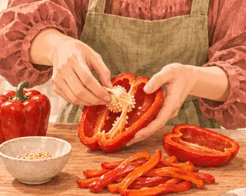
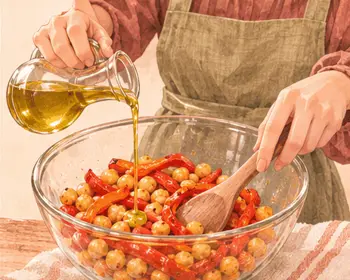
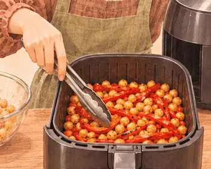
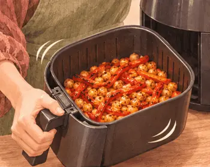
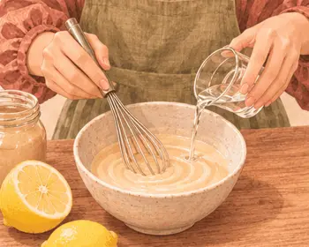
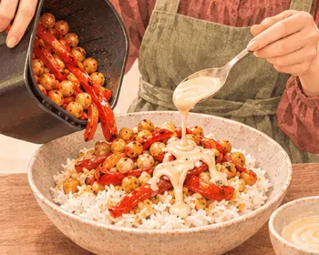

عشاء ما بعد التمرين · بعد النادي
أرز بالفلفل المشوي وحبّ الحمّص
٥٤٠ سعرة للحصة١٨–٢٤ دقيقة
بروتين١٨ غ
كربوهيدرات٨٦ غ
دهون١٥ غ
ألياف١٤.١ غ
كالسيوم١٠٢ ملغ
حديد٤.٦ ملغ
بوتاسيوم٥٩٢ ملغ
فيتامين ج١٥٨ ملغ
القيم الغذائية تقديرية للحصة الواحدة.
مكوّناتك
الوزن بالجرام · حدّد ما جهّزته
| المكوّن | حصة | ٣ حصص | ٤ حصص |
|---|---|---|---|
| ١٤٠ | ٤٢٠ | ٥٦٠ | |
| ١٤٠ | ٤٢٠ | ٥٦٠ | |
| ١٢٠ | ٣٦٠ | ٤٨٠ | |
| ٤٠ | ١٢٠ | ١٦٠ | |
| ١٢ | ٣٦ | ٤٨ | |
| ٤ | ١٢ | ١٦ |
الأدوات · قلاية هوائية، وعاء، ملعقة
خطوة صغيرة، وطبق لذيذ
يلا، نطبخها معًا.
خذ وقتك، واتبع الصور على راحتك.
الخطوة٠١
اشطف الحمّص وصفّه وجفّفه.

الخطوة٠٢
أزل بذور الفلفل وقطّعه شرائط.

الخطوة٠٣
قلّب الفلفل والحمّص مع الزيت.

الخطوة٠٤
رتّبهما بطبقة واحدة في القلاية. اطبخ على ١٩٠°م مدة ١٢–١٦ دقيقة.

الخطوة٠٥
رجّ السلة في منتصف الوقت. انتظر حتى يلين الفلفل ويحمرّ الحمّص.

الخطوة٠٦
اخلط الحمّص بالطحينة والليمون وملعقة ماء.

الخطوة٠٧
ضع الخليط المشوي فوق الأرز وأضف الصوص.